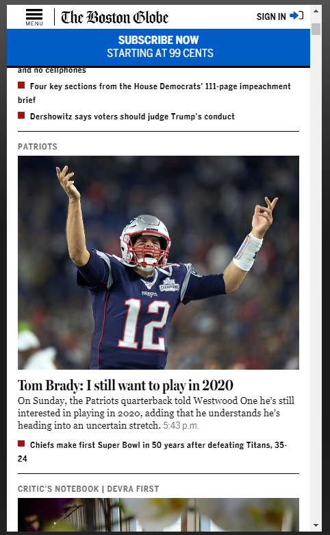
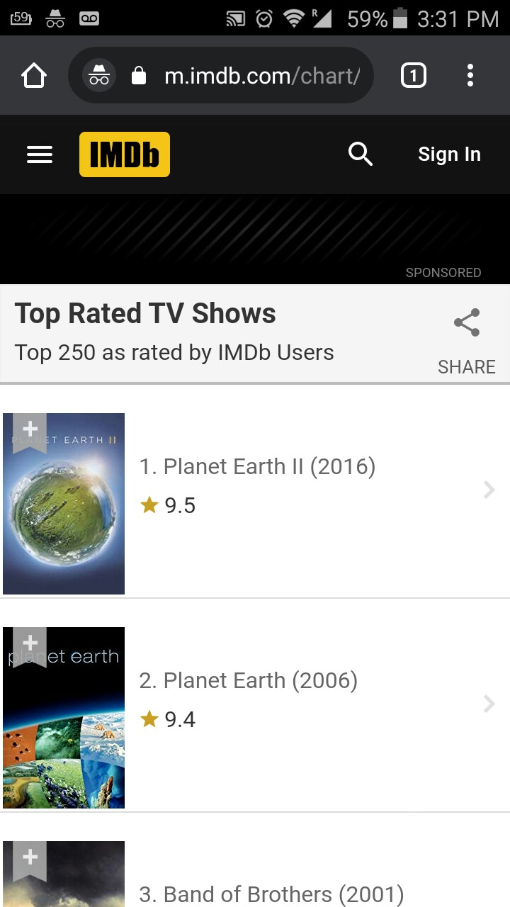

Hierarchy
The Boston Globe
The Boston Globe leads your eye to images that give articles priority, then to the "Subscribe Now" prompt with a blue background, the cool color pops out without overpowering anything, the websites' name works reaaly well by using a stylistic font.
White Space and Clean Design
Google's use of whitespace is absolutely incredible. Most of the main page is empty. It makes the website very clean and efficient. The emptiness is only broken by the colored name, navigation bar, and the searchbar.
PARC: Alignment
IMDB
Sites with lists and rankings like IMDB always show great alignment. You can easily notice the lines on the website. A horizontal line on top and a vertical line to your left. Makes it easy to focus and easy for your eyes to follow along.